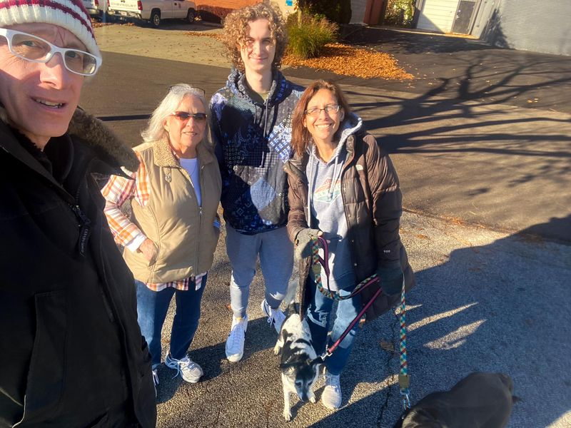

Mobile uploads
I don’t post much about my family for a bunch of reasons. But we were all out together for a walk on this beautiful Saturday. It’s pretty rare these days that we are all together like this.
It’s:
Me
My mother-in-law, Barb. She lives in one apartment in our duplex.
Indy… he’s a senior at Firestone.
Rocky… my wife and the best thing to ever happen to me.
The little dog is Claribell.
The black dog is Sparky. He was too excited to sit for a picture.
The only other family member in our house is Kai the cat. He would rather die than go on a walk.